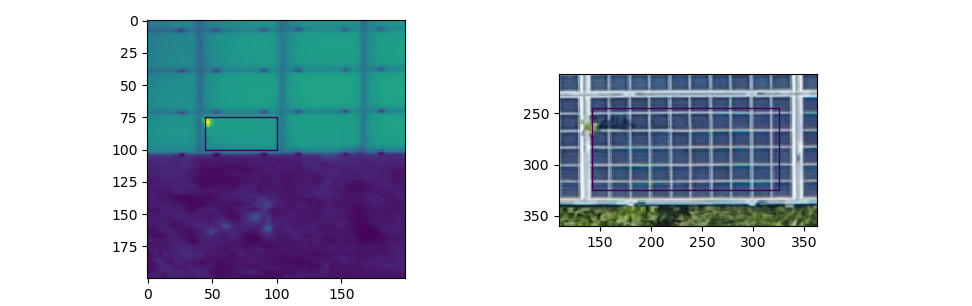

ANALYST-PV
The goal of this project is to provide tools for fault localization, power loss quantification and improved diagnostics of PV power plants. A more efficient detection, diagnosis and localization of the fault will lead to a reduced time during which the fault can impact production. More information can be found on the project website. The project is in close collaboration with the company Sitemark, who provided all the data used to conduct this research.
My work in the project consists of developing image processing techniques to detect and classify anomalies that occur on solar panels including bypass substrings, junction box issues, diode issues, string issues and potential induced defects (PID).
As many of these defects provoke an increase of temperature in the respective solar panel, we integrated infrared or thermal imaging in addition to standard RGB imaging into the detection system. The workflow can be summarized in the following four main steps:
- Registration of RGB and thermal imagery
- Detection of solar panels using thermal images
- Detection and classification of anomalies using fusion of RGB and thermal images
- Determination of the root cause of the defects using fusion of RGB and thermal images
- Determination of the shading profile
1. Registration of RGB and thermal imagery
The first step in the process consists of aligning the RGB and thermal images, a procedure also known as registration. Doing so, we obtain for every spatial unit visual as well as thermal information, which can be exploited in the following steps of detecting anomalies as well as their root causes.
Figure 1: An RGB orthophoto (left) overlaid with the thermal orthophoto (right).
2. Detection of solar panels using thermal images
The detection of solar panels can easily be conducted using thermal images as the borders of solar panels are often colder than the panels themselves and thus appear darker in thermal images. We have developed two different techniques to detect solar panels in thermal images.
One technique is based on a classical machine learning approach. First we conduct a preprocessing of the images, involving a gamma correction to enhance the contrast and morphological operations to make the edges of the solar panels more salient. Next, we use thresholding and contour extraction to obtain segments of potential solar panels that we eventually evaluate for shape and size. Finally, we compute a feature vector based on appearance and shape for each candidate panels and train a support vector machine to differentiate between true solar panels and other structures.
This first technique allows us to create a large dataset of solar panels, which we use in a our second, deep learning based technique. We trained a Mask R-CNN network using images that were subjected to a contrast enhancement and a bilateral filter. The results were satisfying but not 100% perfect in complex circumstances. In the images below, three different challenges are depicted: strong sun reflections, power lines casting shadows on the solar panels and elements with a similar structure as solar panels.
Figure 2: Solar panel detector using deep learning.
However, with the knowledge that solar panels always occur in solar panel banks or regular grids, we can infer the location of missing panels. When a ‘missing’ panel is detected, we still need to verify whether it is not a real missing panel, which would be classified as an ‘anomaly’. Below an image is depicted with the output of our final algorithm.
Figure 3: Solar panel detector after post processing using prior knowledge about the location of the solar panel arrays.
3. Detection and classification of anomalies
Once we know the precise location of the solar panels in the images, the anomalies can be more easily detected as the search for anomalies is restricted to the specific region of the solar panel in the thermal image. Below the detection of a hotspot within a solar panels is depicted.
Figure 4: Solar panel anomaly detected using deep learning.
4. Determination of the root cause of the defects
The final step of the analysis is to determine the root cause of the defect. Among the possible causes for hotspots are soiling, vegetation, corrosion, shading and bird poo or other ‘droppings’. The cause can also be a mechanical problem, e.g. an issue with a diode or junction box. Below there are two examples.

Figure 5: Several root causes of anomalies within solar panels: vegetation (top) and an object that has been dropped (bottom).
5. Determination of the shading profile
The final step in the pipeline is to determine the shading profile of the PV plant. By modelling which parts of the solar plant are shaded during the entire year, we can compare the true output of the respective solar bank or string with the expected power output. In case both values do not match, we can deduce that an anomaly should be present. Below is an animation of the shading profile of a PV power plant.

Figure 6: Shading profile of a PV power plant.